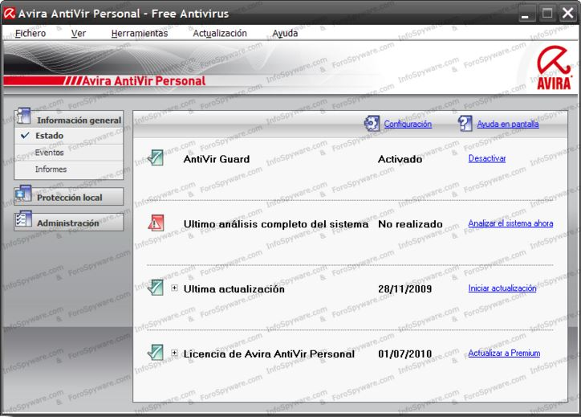
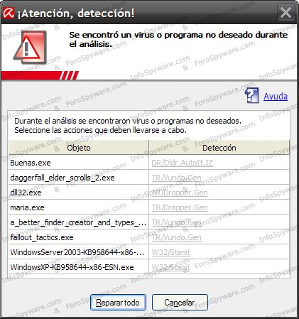
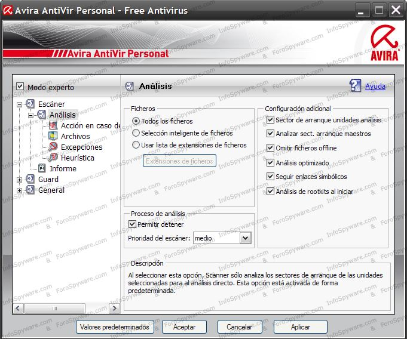

Descripción completa de todos los menús
Ejecute Avira Antivir haciéndole doble clic a su ícono del escritorio:
1.- Información general:
Sirve para supervisar el estado de protección de su sistema y las funciones de Antivir Free.
La sección Estado ,ofrece la posibilidad de ver de solo una mirada, qué módulos de Avira Antivir Free están activos y aporta información sobre la última actualización realizada.

Es muy importante, luego de instalar el Avira Antivir actualizar la base de datos haciendo clic en Iniciar actualización
Es conveniente realizar un escaneo completo, luego de la instalación y actualización, para ver en que estado se encuentra la PC. Para iniciar el escaneo hay que hacer clic en Analizar el sistema ahora, que se encuentra en información general del panel de control.
Al terminar el escaneo aparecerá esta imagen mostrando las infecciones encontradas. Haga clic en el botón Reparar todo para que las infecciones sean enviadas a la cuarentena.
De necesitar que el sistema sea reiniciado, para enviar los elementos a la cuarentena aparecerá este mensaje y se iniciará una cuenta regresiva para que el sistema sea reiniciado, o puede hacer clic sobre el botón Ok.

• La sección Eventos: Ofrece la posibilidad de informarse sobre los eventos que generan los módulos de Avira antivir free.
• La sección Informes: Mostrará la información del virus encontrados escaneados, haciendo clic derecho, muestra el estado de actualización de la base de datos del virus, con sus respectivas fecha y hora. Haciendo doble clic sobre el informe que desee, mostrará una ventana con toda la información disponible.
También se puede ver un informe en formato de bloc de notas.
2.- Protección local:
• Analizar: La sección analizar permite configurar o iniciar fácilmente el análisis directo. Los perfiles predefinidos permiten llevar a cabo un análisis con opciones predeterminadas y ya adaptadas.
Los botones de local protección, de izquierda a derecha:
1.- Inicia el análisis con el perfil seleccionado.
2.- Inicia el análisis con el perfil seleccionado como administrador. (Solo en windows vista)
3.- Crea enlace en el escritorio con el perfil seleccionado.
• La sección Guard: (guardia), Muestra información sobre los ficheros, así como otros datos estadísticos que pueden restablecer en cualquier momento y permite abrir el fichero de informe. Prácticamente con sólo pulsar el botón, se obtiene información detallada sobre el último scan o programa no deseado que se detectó.
El botón guard, de la izquierda:
1.- Muestra fichero de informe.

3.- Administración:
• Cuarentena: La sección cuarentena contiene lo que se denomina gestor de cuarentena o para ficheros sospechosos que se quieren poner en cuarentena. Además existe la posibilidad de enviar un determinado fichero por mail a Avira Malware Search Center.
Los botones de la cuarentena, de izquierda a derecha:
1.- Vuelve a analizar los ficheros.
2.- Muestra las propiedades del objeto seleccionado.
3.- Restaura el objeto seleccionado.
4.- Restaura el objeto en la ubicación que queramos.
5.- Añade objetos a la cuarentena.
6.- Envía objetos seleccionados a Avira antivir para ser analizados.
7.- Elimina el objeto seleccionado.
• La sección Programador: Permite crear tareas de análisis y actualización, programadas, y adaptar o eliminar tareas existentes.
Los botones de la administración, de izquierda a derecha:
1.- Crea nueva tarea con el asistente.
2.- Muestra propiedades avanzadas de la tarea seleccionada.
3.- Modifica la tarea seleccionada.
4.- Elimina la tarea seleccionada.
5.- Muestra el fichero de informe.
6.- Inicia la tarea seleccionada.
7.- Detiene la tarea seleccionada.
Haciendo clic en en botón configuración se puede ver la configuración de Avira Antivir. La sección Scanner de la configuración Avira Antivir free, se encarga de la configuración de análisis directo, es decir del análisis a petición.
Hay tres modos de escaneos.
1.- Todos los ficheros: Al seleccionar esta opción, se analizan todos los ficheros sin tener en cuenta su extensión.
2.- Extensiones inteligentes: Si se activa esta opción elige automáticamente los ficheros seleccionados para analizarlos, es decir decide sobre la base del contenido de un fichero se éste se analizará o no en cuanto a virus y programas no deseados. Esta configuración está por defecto y es la recomendada
3.- Usar lista de extensiones de ficheros: Si se activa esta opción, sólo se analizan los ficheros de la extensión especificada. Todos los tipos de ficheros que pueden contener virus o programas no deseados ya están establecidos. Esta lista puede editarse manualmente con el botón extensiones de ficheros.
Extensiones de ficheros Con la ayuda de este botón se abre una ventana de diálogo en la que aparecen todas las extensiones a analizar en un modo Usar extensiones de lista. Las extensiones incluyen entradas determinadas, pero puede añadir o eliminar entradas.
Nota: Es conveniente dejar las casillas que viene marcadas por defecto en configuración adicional.
Proceso de análisis Si esta opción está activada es posible finalizar en cualquier momento el análisis en busca de virus.
Prioridad de escaneo.
Bajo: Mientras solo se este ejecutando el escaneo, la velocidad es la máxima, así se facilita el trabajo de otras aplicaciones.
Medio: El sistema operativo da a todos los procesos la misma cantidad de procesos en teoría.
Alto: El trabajo de otras aplicaciones es casi imposible, pero es más veloz.

Categorías de riesgos avanzadas
General puede ejecutar un análisis de acuerdo a las siguientes categorías.
Adware/spyware
Aplication
Back-door client (BDC)
Dialer
Duble-extension files
Games
Jockes
Pishings
Sexurity privacy risk (SPR)